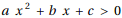
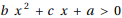
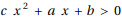
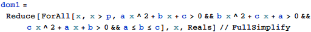
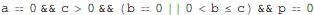

東京大学 2020年 理科 第1問
問題
a,b,c,pを実数とする。不等式



をすべて満たす実数xの集合と、x>pを満たす実数xの集合が一致しているとする。
(1) a,b,cはすべて0以上であることを示せ。
(2) a,b,cのうち少なくとも1個は0であることを示せ。
(3) p=0であることを示せ。
解答
(1), (2), (3)
a≤b≤cとしても一般性を失わない。
3本の不等式をすべて満たす実数xの集合と、x>pを満たす実数xの集合が一致しているから、
In[387]:=

Out[387]=

よって(1)、(2)、(3)のすべてが示された。
補足・感想
述語論理の形式にできれば、あとはMathematicaが(1)から(3)まで一気に解いてくれた。